British & American Literature
35 great writers on two trees. Tap a face to meet the writer, then read one of their famous stories.
1 Tap a face2 Meet the writer3 Read their story
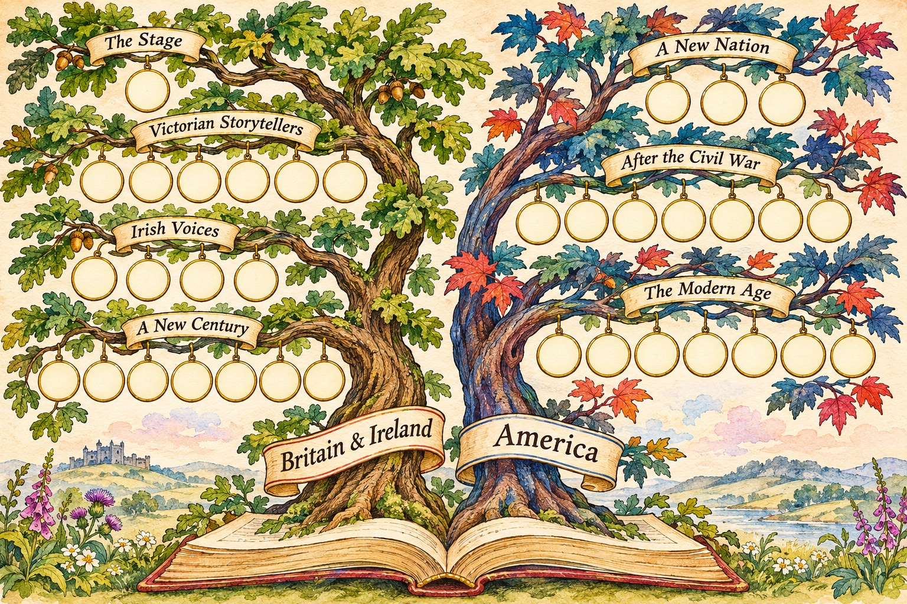
 Shakespeare
Shakespeare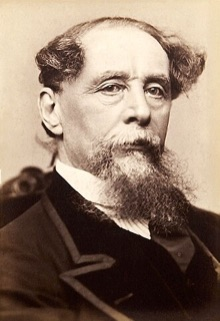
Dickens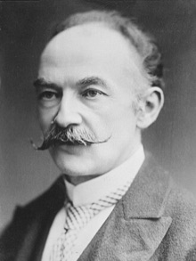
Hardy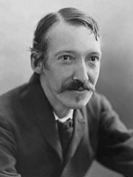
Stevenson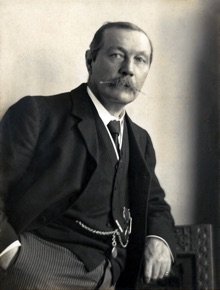
Conan Doyle Kipling
Kipling Jacobs
Jacobs Wilde
Wilde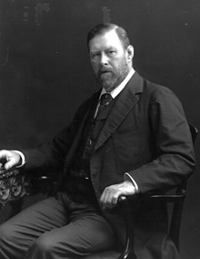
Stoker Joyce
Joyce O'Flaherty
O'Flaherty Wells
Wells Saki
Saki Maugham
Maugham Forster
Forster Lawrence
Lawrence Woolf
Woolf Mansfield
Mansfield Irving
Irving Hawthorne
Hawthorne Poe
Poe Twain
Twain Bierce
Bierce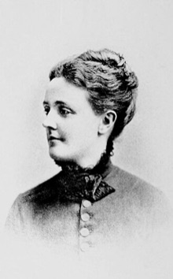
Jewett Chopin
Chopin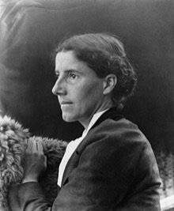
Gilman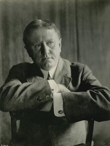
O. Henry London
London Anderson
Anderson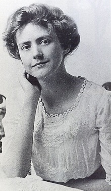
Glaspell Connell
Connell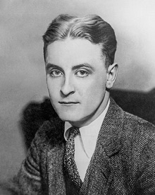
Fitzgerald Hemingway
Hemingway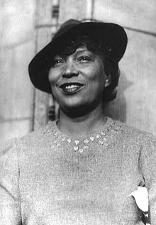
Hurston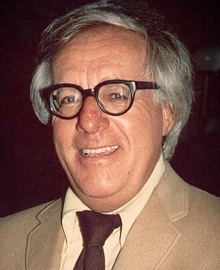
BradburyAll the writers
The same map as a list.